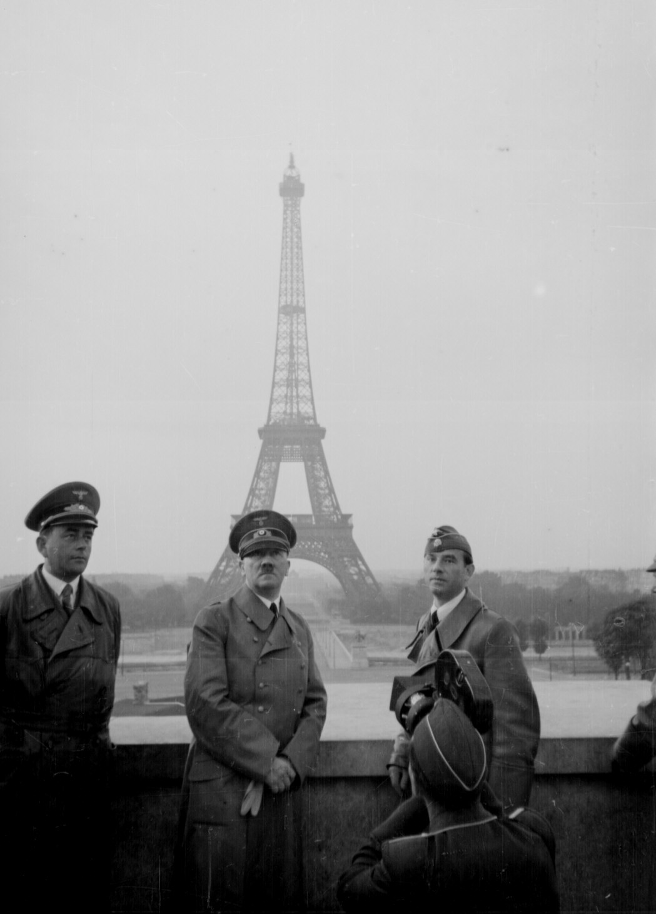
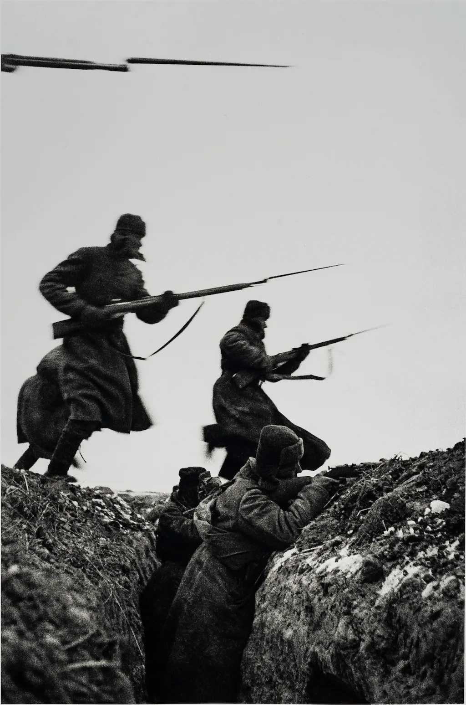
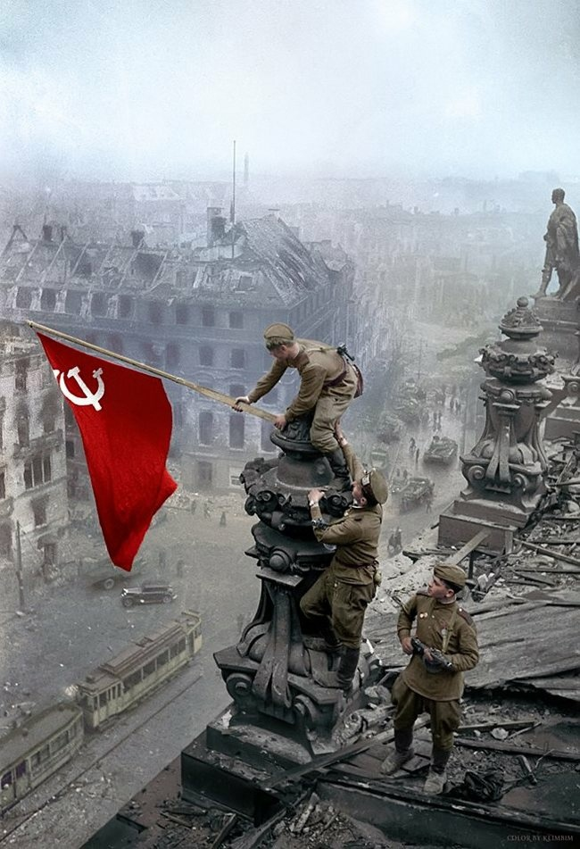

Dünyanın en seçkin lideri şöyle diyor

Beni görmek demek mutlaka yüzümü görmek demek değildir. Benim fikirlerimi, benim duygularımı anlıyorsanız ve hissediyorsanız bu yeterlidir.
Tarihin önemli dönüm noktalarını daha yakından tanıyacaksınız. Her sayfa, sizi tarihin derinliklerine götürerek.
Tarihin dönüm noktalarını 'Geçmişin İzleri' ile keşfedin.
Doğru bilgi için Erişim ücretsidir, herhangi bir ücret bulunmamaktadır.
İkinci dünya savaşı tarihi burada ve sadece doğru ve kesin bilgiler için!
Gerçeklerin ön yüzünü okumak istiyorsanız hoşgeldiniz burası size göre!
Geçmişin İzleri olarak, tarihin önemli olaylarını ve dönüm noktalarını derinlemesine incelemenizi sağlayan kapsamlı ve ücretsiz bir kaynak sunuyoruz. Amacımız, geçmişin izlerini sürerek tarihî bilgilerinizi zenginleştirmek ve sizi geçmişin önemli anlarıyla tanıştırmaktır.
Tüm içerik ve bilgiler ücretsiz olarak sunulmaktadır.
Tarihin önemli olaylarını detaylı bir şekilde keşfetmenizi sağlar.
Tarihî olayları ve dönüm noktalarını kapsayan geniş bir bilgi arşivi sunar.
Geçmişin önemli anlarını öğrenmenizi ve tarihe dair bilginizi artırmanızı hedefler.
Konu 5
Konu 1
Konu 2
Konu 3
Konu 4
Konu 6

Beni görmek demek mutlaka yüzümü görmek demek değildir. Benim fikirlerimi, benim duygularımı anlıyorsanız ve hissediyorsanız bu yeterlidir.